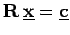
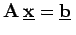
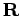
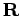
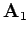
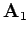
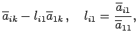
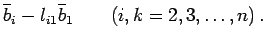

Inhalt Index DeskTop Bronstein

 Numerische Mathematik Numerische Lösung von Gleichungssystemen Lineare Gleichungssysteme Dreieckszerlegung einer Matrix
Numerische Mathematik Numerische Lösung von Gleichungssystemen Lineare Gleichungssysteme Dreieckszerlegung einer Matrix


Durch die elementaren Umformungen
überführt. Da dabei nur äquivalente Umformungen vorgenommen werden, besitzt  dieselbe Lösung wie . Man erhält sie aus (19.27):
Die durch die Formel (19.28) angegebene Vorschrift nennt man Rückwärtseinsetzen, da die Gleichungen von (19.27) in der umgekehrten Reihenfolge ihrer Entstehung benutzt werden.
Der Übergang von  zu  erfolgt in n-1 sogenannten Eliminationsschritten, deren Durchführung am ersten Schritt gezeigt werden soll. Dieser überführt die Matrix
zu  erfolgt in n-1 sogenannten Eliminationsschritten, deren Durchführung am ersten Schritt gezeigt werden soll. Dieser überführt die Matrix  in die Matrix :
in die Matrix :
Dabei ist wie folgt vorzugehen:
| aik(1) | = |  | |
| bi(1) | = |  | (19.30) |
Die in der Matrix (19.29) eingerahmte Teilmatrix ist vom Typ (n-1,n-1) und wird analog zu  behandelt; usw. Diese Vorgehensweise bezeichnet man als GAUSSsches Eliminationsverfahren oder GAUSSschen Algorithmus.
behandelt; usw. Diese Vorgehensweise bezeichnet man als GAUSSsches Eliminationsverfahren oder GAUSSschen Algorithmus.